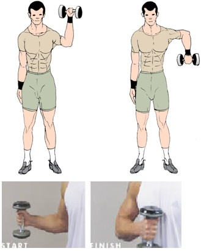
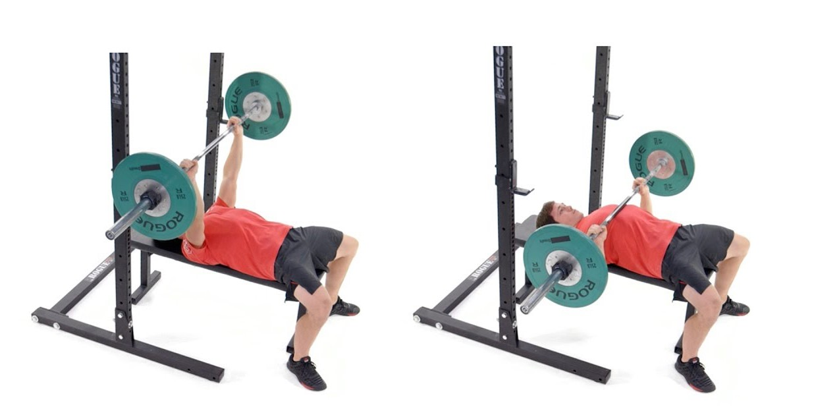
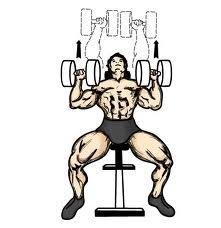

Når du skal trene bryst er det viktig å varme opp ikke bare bryst men skuldrene, mer spesifikt rotator cuffs.
Veldig mange får ubehag i skuldrene og får knekkende lyder i skuldrene. For å forhindre dette kan du varme opp rotator cuffsene ved 2 enkle øvelser med lette manualer.

Benkpress

Det er av de viktigste øvelsene for bryst. her er det viktig å plante skuldrene ned i benken og prøv å skyve de mot føtterne for å unngå skader
Utførelse
Løft av stangen, og hold stangen over brystet
Før stangen rolig ned mot brystet, prøv å "lande" stangen rett under brystvortene
Press så stangen opp igjen
Skråbenk

skråbenk er en god øvelse for å treffe brystet på andre steder enn i benkpress.
Utførelse
Slipp albuene ned til side for kroppen
Albuene skal være omtrent på linje med brystet
Manualene slippes rolig ned ved yttersiden av brystet